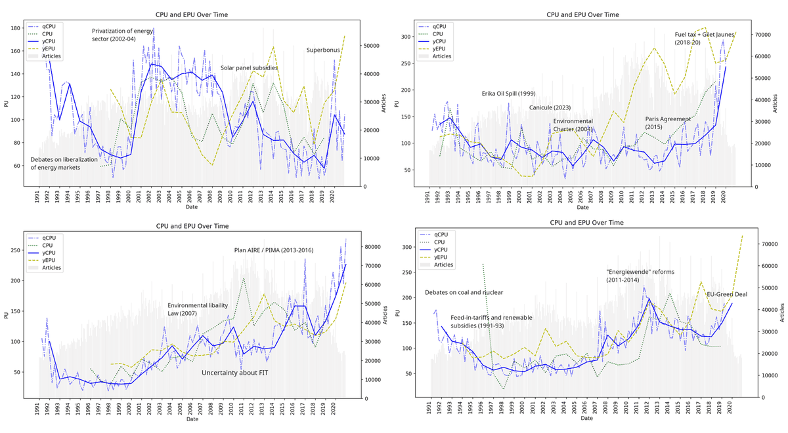

Climate Policy Uncertainty and Directed Technical Change: Evidence from European Firms
abstract
In this paper, I derive novel indexes of Climate Policy Uncertainty for four European countries. Exploiting a new dataset of web-scraped newspaper archives and text-as-data techniques, I explore the role of policy stance underlying aggregate indices of CPU, deriving sub-indexes for uncertainty suggesting increasing or decreasing future stringency. Building on the Directed Technical Change literature, I test empirically the relationship between CPU sub-indexes and environmentally-relevant technologies, in a panel of European firms between 1990 and 2020. I find a significant relationship between the direction of firms’ technological efforts, proxied by patents, and that of policy uncertainty. The results suggest that policy uncertainty is a relevant factor in affecting the direction of technical change, bearing important implications in terms of both climate and green industrial policy making.